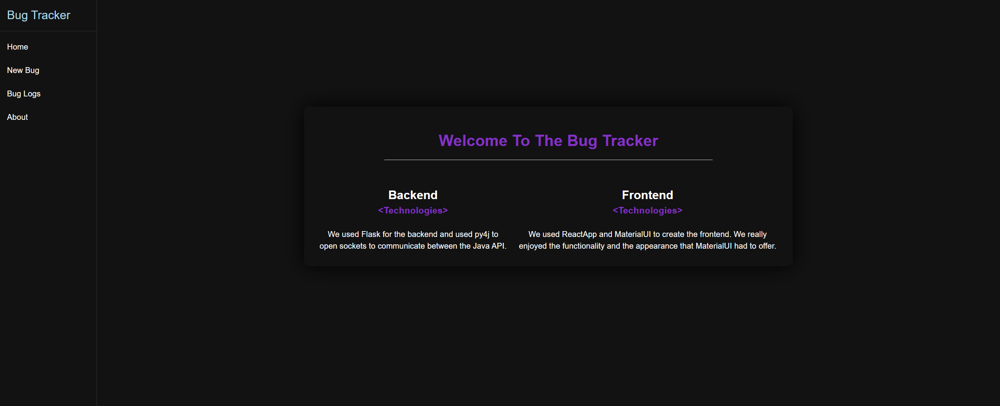
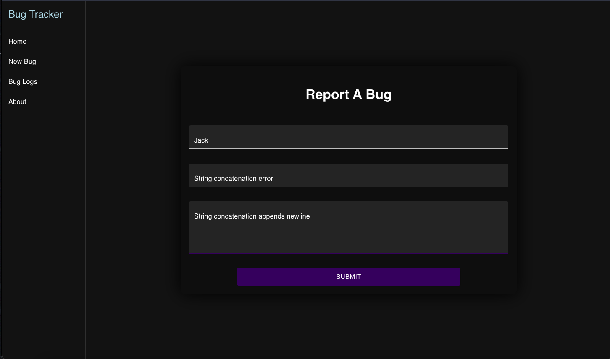
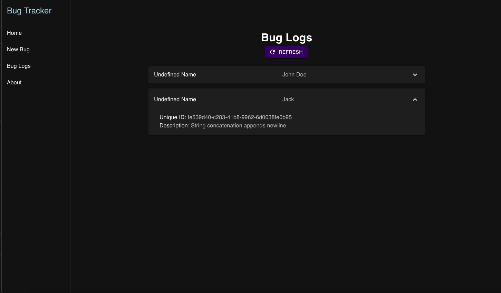

Project Type: Full-Stack · Issue Tracking Tool
Bug Tracker is a full-stack web application that allows teams to log, update, and track software bugs or feature requests throughout a development cycle. It includes role-based status updates, filtering, and a clean UI to simulate real-world project management workflows.
Flask, Python, React.js, Material UI, CSS, SQLite
   ← Back to Portfolio